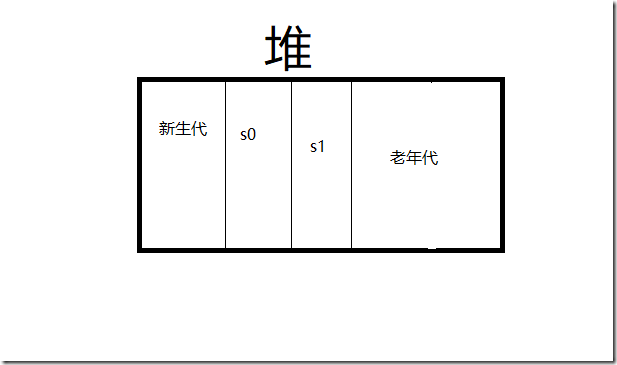
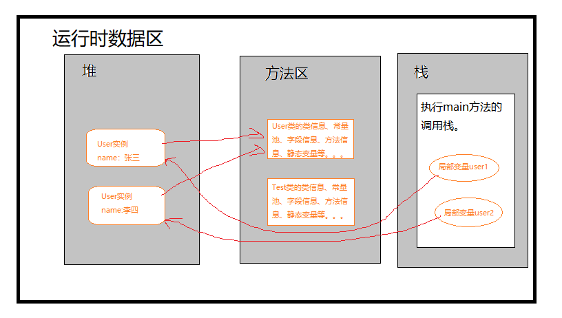

Java虚拟机在执行Java程序的过程中会把它所管理的内存划分为多个区域，这些区域各有自己的用途以及独特的创建和销毁时间，今天就带着大家来揭开这些不同的数据区域的面纱
先来一张最经典的图：

今天我们来学习一下图片上方的程序计数器、方法区、栈、堆几个部分。
程序计数器是随着一条线程的启动而创建的，每一个线程独有一个程序计数器，多个线程之间互不影响。（可以理解为Java中的ThreadLocal）
想要知道程序计数器为何如此设计我们先要知道它保存的是什么？
本地方法栈和虚拟机栈可以统称为栈，由于本地方法栈是jvm调用操作系统native方法所使用的栈且它们的作用是非常相似的，所以这里我们重点看一下虚拟机栈。
虚拟机栈与程序计数器一样，也是线程私有的，每个线程都会有一个自己的虚拟机栈。它描述的java方法执行的内存模型
而每一个虚拟机栈呢又是有由多个帧组成的，当一个方法被调用时就会产生一个帧，帧的生命周期跟随着这个方法的执行周期。
每一个帧里面又包括了被调用的这个方法的局部变量表、操作数栈、常量池指针、动态链接、方法出口等信息。
局部变量表包含了编译器可知的基本数据类型和对象引用。
在下方的静态方法中局部变量表就存放了a和b
1 | static void methed1（String a,int b） |
而非静态方法中就会多了一个当前对象this，此局部变量表存放的就是this、a、b
1 | void methed1（String a,int b） |
Java中所有的参数传递都是依靠操作数栈进行的，例如如下代码：
1 | static int methed1（int a,int b）{ |
其实这短短的三行代码执行的过程是这样的：
1 | 1. 0压栈 |
顾名思义，指向常量池的指针。
这个错误主要是由线程请求的栈深度大于了线程所允许的最大深度而引起的。那么栈的深度又是个什么鬼呢<br>
我们知道，一次方法调用就会创建一个帧，一个帧中又包含了我们上边刚刚说起的那么多东西，而它们的生命周期是随着方法调用才会销毁的。这些东西的存在都是需要占用内存的，而栈的内存肯定是有一个极限的。看一下下方的这个无限的递归方法：
1
2
3
4
5
int c=0;
int methed1（String a,int b）{
++c;
return methed1（a,b）；
}
方法每执行一次，就会创建一个帧，一个帧里面又包含了局部变量表操作数栈常量池指针等。就这样随着方法的执行虚拟机栈占用的内存越来越多就会引起StackOverflowError。
使用-Xss10m参数调整栈的大小，可以使用不同的参数来验证一下当抛出异常时c的值，c的值越大代表栈的深度越深。
由上方的学习我们知道，每一个线程都有一个自己独有的虚拟机栈，然后这些虚拟机栈中又包含了辣么多东西。当创建的线程多到栈的内存不足以支撑时就会引起此异常。
1 | while(true){ |
同1，使用-Xss10m参数调整栈的大小。
在我们的程序中，跟我们打交道最多的就是堆里的对象了。基本上所有（不包括常量池中存在的）通过new操作创建的对象都会保存在堆中。所以与栈的线程私有不同，堆是所有线程共享的（毕竟不共享难道每个线程调用时都new一次对象岂不是疯了），所以它也是虚拟里最大的一块。
如果根据垃圾收集算法来分的话，堆还可以再细分下去。首先呢，堆可以分为新生代和老年代，而新生代又分为eden区和s0、s1（s0、s1又叫from、to）三个区，如下图所示：。

当一个普通的对象刚new出来的时候它是存在于eden区的，然后呢在进行垃圾回收时回进入s0和s1区，如果几轮垃圾回收后都没有被回收的话就会进入变成一个老年对象进入老年代。当然，有的对象也比较特殊，比如说一些大对象或者伴随整个程序生命周期的对象在刚出生的时候就会进入老年代避免一些不必要的垃圾回收,关于详细内容可参考我的另一篇博客：JVM垃圾收集算法
这个异常就是由于堆中存在大量的对象，这些对象无法通过垃圾回收进行收集从而导致的堆内存溢出。
可以适当根据机器的性能使用-Xms -Xmx参数调整栈的大小，不过如果想要治本的话还是要选择优化代码和算法。
直接内存并不属于运行时数据区的一部分，当然也不属于堆。之所以放到这里是因为直接内存虽然不属于运行时数据区，但是它也是需要占用内存的，如果我们在分配内存时把本机的总内存都分配给运行时数据区的各个部分而忽略了直接内存的话同样也是会引起OutOfMemoryError的。
方法区同样是各个线程共享的内存区域，它主要存储已经被虚拟机加载的类信息
存放该类所用到的常量的有序集合
一个保存类中所有的方法的数组，数组中每个每个元素是对每个方法的直接引用
Integer,Long等基本类型的包装类 -127到128之间的缓存数据
因为方法区主要是负责存放类的相关信息，而且因为gc的次数也不像堆来的频繁，所以当class越来越多的时候就会引起此异常。
使用-XX:PermSize参数调整方法区的大小。
看了堆、栈、方法区的介绍以后你理解他们之间的关系么？
1 | public class User{ |
1 | public class Test{ |
不知道看完上方两端代码，你所理解的关系和我画的图是否一致呢？

本文出自http://zhixiang.org.cn,转载请保留。